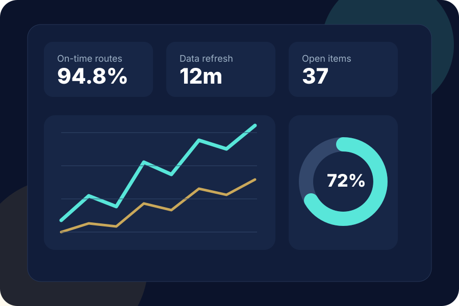
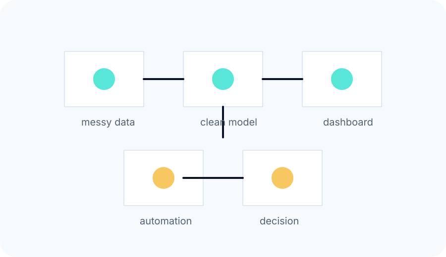

ED
Education consulting
Student, staff, program, and operational reporting built for real school-district workflows, compliance cycles, and leadership decisions.
Celeres Analytics helps education teams and small-business operators replace fragile spreadsheets, slow reporting, and manual workflows with clean data systems, useful dashboards, and automation that saves time.

Whether the setting is a school district, nonprofit program, or growing local company, the work starts the same way: find the decision, fix the data path, and build something people can actually use.
Student, staff, program, and operational reporting built for real school-district workflows, compliance cycles, and leadership decisions.
Lean tools for owners and managers who need better scheduling, invoicing, intake, payroll prep, or operational visibility without enterprise overhead.
Dashboards, scripts, forms, lightweight apps, and AI-assisted workflows that reduce repetitive work while keeping humans in control.
Good systems make routine work faster and exceptions easier to see. Celeres focuses on the full workflow: data capture, cleanup, rules, review, reporting, and action.
View project patterns
That is usually the best place to start.